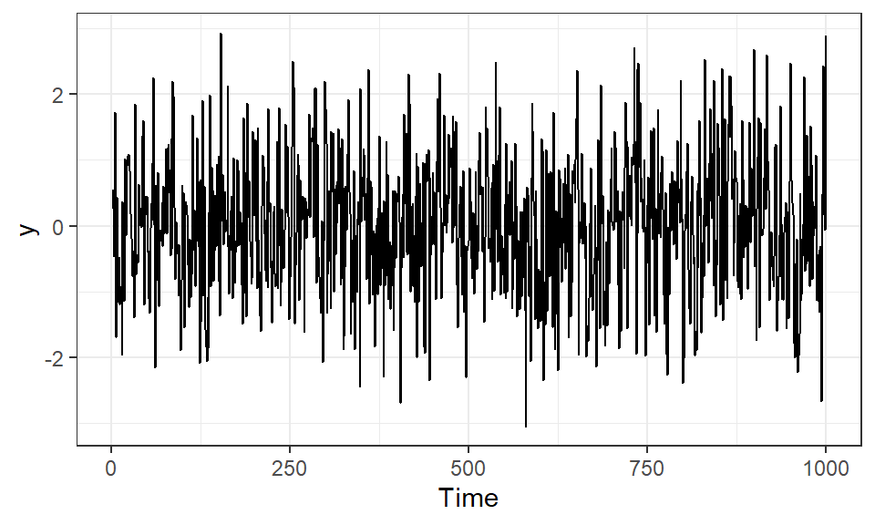
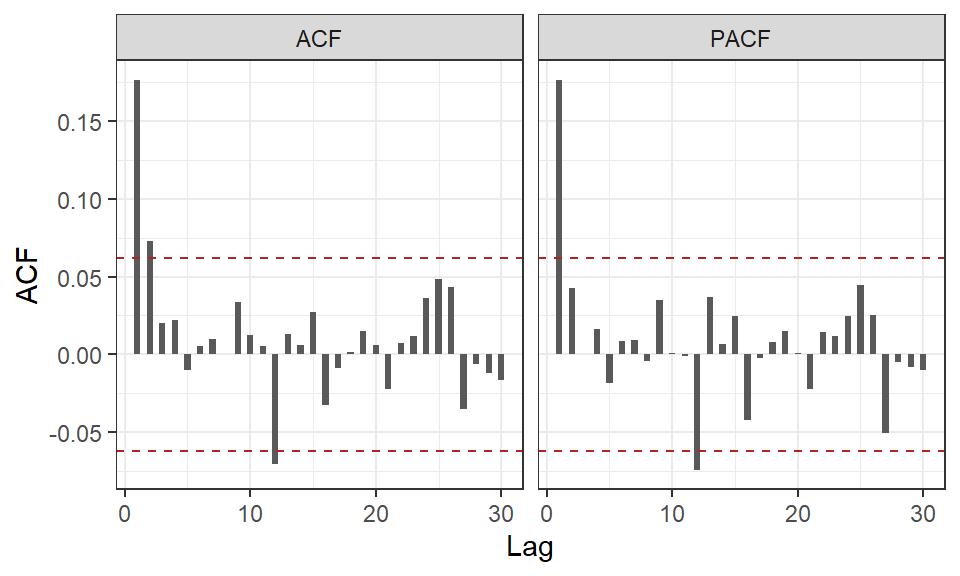
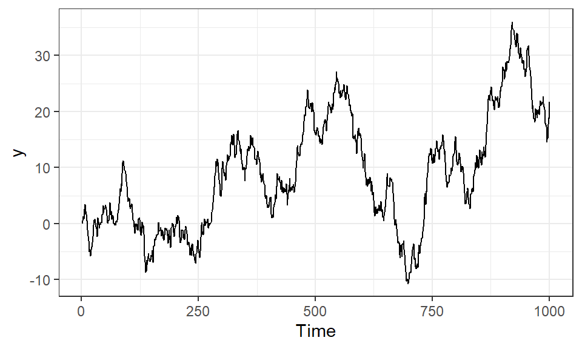
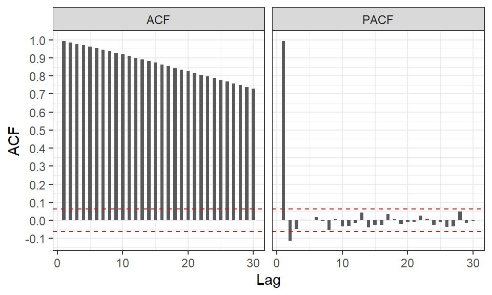
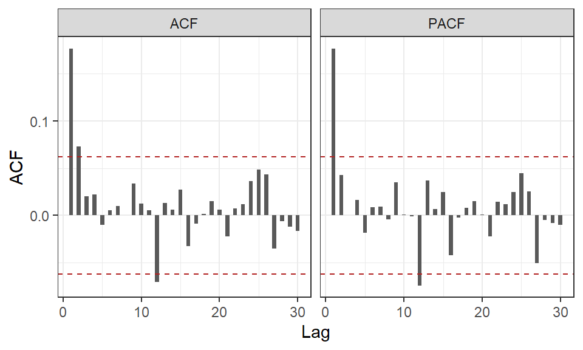

I verkligheten är det inte så enkelt som att identifiera de separata AR och MA processerna från Tabell 22.1 då en modell oftast innehåller en kombination av de båda processerna. I dessa fall kommer autokorrelationen och den partiella autokorrelationen långsamt avta med större \(k\) vilket innebär att det finns oändligt många nollskilda lagg. En modell med båda typer av komponenter kallas för en ARMA-modell och kräver andra verktyg för att identifiera ordningen av de olika delarna. Ofta kan serien först behöver differentieras för stationäritet (se Avsnitt 21.6), därför kallar vi serien mer generellt för en integrerad ARMA-modell, förkortat ARIMA1.
Flera olika metoder har utvecklats för att lösa problematiken med att identifiera en lämplig ordning på ARIMA modeller men detta underlag kommer fokusera på den utökade autokorrelationen (eng. Extended Autocorrelation Function, EACF).
23.1 ARMA(p,q)
När en tidsserie uppvisar mer komplexa beroenden än vad en ren AR- eller MA-process plockar upp, kan vi kombinera dessa till en mer flexibel modell. En ARMA process kombinerar \(p > 0\) AR komponenter och \(q > 0\) MA komponenter till en ARMA(p,q)‑process genom att helt enkelt slå ihop Ekvation 22.1 och Ekvation 22.6 enligt:
där \(e_t\) är vitt brus med varians \(\sigma^2_e\).
23.1.1 ARMA(1,1)
Den enklaste ARMA modellen är när en komponent av vardera AR och MA inkluderas, kallad ARMA(1,1). Modellen definieras enligt:
\[
\begin{aligned}
Y_t = \phi Y_{t-1} + e_t + \theta e_{t-1}.
\end{aligned}
\] Autokorrelationen för denna modell beräknas till: \[
\begin{aligned}
\rho_k
=
\frac{1 - 2\theta\phi + \theta^2}
{(1-\theta)(1-\phi\theta)} \, \phi^{k-1},
\qquad k \ge 1.
\end{aligned}
\]
\(\rho_k\) avtar exponentiellt med en så kallad dämpningsfaktor \(\phi\), men startvärdet \(\rho_1\) påverkas även av \(\theta\). Detta medför återigen att vi kan see många olika trender i autokorrelationen men som alla kommer från en ARMA(1,1)-process.
Notera
Nu börjar vi jobba med modeller som blir väldigt komplexa. Vi kommer härefter gå ifrån mycket av de härledningar som visats i tidigare kapitel och istället fokusera mer på simulering med hjälp av funktioner från stats, forecast och TSA paketen.
Om vi vill simulera och visualisera en ARMA(1,1) kan vi visa detta med hjälp av funktionen arima.sim() från paketet stats, till exempel \(Y_t = 0.5 Y_{t-1} + e_t - 0.3 e_{t-1}\). I argumentet model anger vi en lista med dels modellens ordning, order = c(1, 0, 1) och vilka värden på modellens parametrar som önskas i ar = phi och ma = theta.
set.seed(123)n <-1000# Simulerar en ARMA(1,1) med givna parametervärden y <-arima.sim(n, model =list(order =c(1,0,1), ar =0.5, ma =-0.3))data <-tibble(x =seq_len(n),y = y |>c() )ggplot(data) +aes(x = x, y = y) +geom_line() +theme_bw() +labs(x ="Time", y ="y")

Figur 23.1: Simulerad ARMA(1,1)
Som vi ser i Figur 23.1 går det inte på något lätt sätt visuellt bestämma \(p\) och \(q\) bara från den observerade serien. Figuren ser stationär ut då den verkar centreras runt samma väntevärde och har ungefär samma variation för alla tidpunkter. Eftersom vi själv skapat serien vet vi ju att serien bör (lämpligen) modelleras med hjälp av en ARMA(1,1), men i ett riktigt fall behöver vi kontrollera SAC (funktionen acf()) och SPAC (funktionen pacf()) för att se vad vi kan utläsa för beteenden.
data <-tibble(lag =1:30,# Beräknar SAC och SPAC samt plockar ut endast acf delen av objektet som innehåller korrelationernaACF =acf(y, lag.max =30)$acf,PACF =pacf(y, lag.max =30)$acf ) |>pivot_longer(!lag)ggplot(data) +aes(x = lag, y = value) +geom_bar(stat ="identity", width =0.5) +geom_hline(yintercept =1.96/sqrt(length(y)), linetype =2, color ="firebrick") +geom_hline(yintercept =-1.96/sqrt(length(y)), linetype =2, color ="firebrick") +theme_bw() +scale_y_continuous(breaks =seq(-1, 1, by =0.05)) +labs(x ="Lag", y ="ACF") +facet_wrap(~name, nrow =1)

Figur 23.2: Autokorrelation och partiell autokorrelation för den simulerade ARMA(1,1)
Från Figur 23.2 visas ungefär ett signifikant lagg (även kallad spik) vid \(k = 1\) i respektive figur, eller kanske främst att de visar ett snabbt avtagande mönster. Utifrån detta skulle vi kunna dra slutsatsen att en ARMA(1,1) är lämplig, men hur mycket av den slutsatsen som kommer från att vi vet hur vi simulerat serien och hur mycket som kommer enbart från diagrammen är svårt att säga. Tolkningen är något osäker så vi kan använda ytterligare ett verktyg för att fatta ett mer objektivt och informerat beslut om modellvalet som också går att använda i fall där vi inte simulerat serien, den utökade autokorrelationen som vi kommer till i Avsnitt 23.2.
CautionÖvning 1
Betrakta följande fyra modeller, där \(e_t\) är vitt brus: A: \(Y_t=0.6Y_{t-1}+e_t-0.2e_{t-1}\) B: \(Y_t=0.4Y_{t-1}-0.1Y_{t-2}+e_t\) C: \(Y_t=e_t+0.5e_{t-1}-0.3e_{t-2}\) D: \(Y_t=0.7Y_{t-1}+e_t+0.2e_{t-2}\) Vilka av följande påståenden är korrekta?
Sant. Modell C saknar laggade \(Y\)-värden och innehåller tidigare feltermer till och med lagg \(2\). Den kan därför betecknas ARMA(\(0,2\)), vilket motsvarar en MA(\(2\))-process.
Sant. AR-ordningen bestäms av den högsta laggen för tidigare \(Y\)-värden och MA-ordningen av den högsta laggen för tidigare feltermer. Den högsta feltermen är \(e_{t-2}\), så modellen har \(q=2\) även om koefficienten framför \(e_{t-1}\) är \(0\).
Falskt. Modell B innehåller två laggade \(Y\)-värden och inga tidigare feltermer. Den är därför en ARMA(\(2,0\))-process, vilket är detsamma som en AR(\(2\))-process. Den aktuella feltermen \(e_t\) räknas inte som en MA-term av ordning \(1\).
Sant. Den högsta laggen bland de tidigare \(Y\)-värdena är \(1\) och den högsta laggen bland de tidigare feltermerna är också \(1\). Modellen är därför en ARMA(\(1,1\))-process.
23.1.2 ARIMA(p,d,q)
När en serie inte är stationär kan differentiering genomföras för att sedan anpassa en ARMA-process. Vi kan beteckna den stationära serien som \(W_t = \Delta^d Y_t\) och följer sedan teorin presenterad i Avsnitt 23.1.
När en series väntevärde inte är 0, behöver inte modellen göras svårare än att det läggs till som en konstant term, betecknad \(\theta_0\). Detta motsvarar till viss del ett intercept i en linjär regression och hjälper till att flytta väntevärdet av den stationära serien med väntevärde 0 till det observerade väntevärdet för serien. I vissa specialfall med differentiering kan denna konstanta term användas för att modellera en linjär trend i data.
Vi kan simulera en enkel ARIMA(1,1,1) för att se hur den skiljer sig åt Figur 23.1. På grund av att vi differentierar kommer arima.sim() skapa en differentierad ARMA(1,1) av längd n som sedan “återdifferentieras” till den observerade serien ARIMA(1,1,1), det vill säga en serie av längd n + 1.
set.seed(123)n <-1000# Simulerar en ARIMA(1,1,1) med givna parametervärden arima111 <-arima.sim(n, model =list(order =c(1,1,1), ar =0.5, ma =-0.3))data <-tibble(# Lägger till en tidpunkt pga differentieringenx =seq_len(n +1),y = arima111 |>c() )ggplot(data) +aes(x = x, y = y) +geom_line() +theme_bw() +labs(x ="Time", y ="y")

Figur 23.3: Simulerad ARIMA(1,1,1)
Figur 23.3 visar stora skillnader med Figur 23.1, framförallt att serien ser ut att följa mer långtgående trender. Detta ger oss rent visuellt en indikation att serien behöver differentieras innan modellanpassningen, vilket vi också kan se i seriens SAC och SPAC.
data <-tibble(lag =1:30,# Beräknar SAC och SPAC samt plockar ut endast acf delen av objektet som innehåller korrelationernaACF =acf(arima111, lag.max =30)$acf,PACF =pacf(arima111, lag.max =30)$acf ) |>pivot_longer(!lag)ggplot(data) +aes(x = lag, y = value) +geom_bar(stat ="identity", width =0.5) +geom_hline(yintercept =1.96/sqrt(length(y)), linetype =2, color ="firebrick") +geom_hline(yintercept =-1.96/sqrt(length(y)), linetype =2, color ="firebrick") +theme_bw() +scale_y_continuous(breaks =seq(-1, 1, by =0.1)) +labs(x ="Lag", y ="ACF") +facet_wrap(~name, nrow =1)

Figur 23.4: Autokorrelation och partiell autokorrelation för den simulerade ARIMA(1,1,1)
Till skillnad från Figur 23.2, där autokorrelationerna för båda måtten snabbt avtar, visar SAC ett extremt långsamt avtagande mönster. Detta är ytterligare en indikation att serien inte är stationär och vi behöver differentiera innan modellanpassningen.
Efter differentiering kan vi beräkna SAC och SPAC igen för att se samma typ av form som Figur 23.2.
arima111diff <-diff(arima111)data <-tibble(lag =1:30,ACF =acf(arima111diff, lag.max =30)$acf,PACF =pacf(arima111diff, lag.max =30)$acf ) |>pivot_longer(!lag)ggplot(data) +aes(x = lag, y = value) +geom_bar(stat ="identity", width =0.5) +geom_hline(yintercept =1.96/sqrt(length(y)), linetype =2, color ="firebrick") +geom_hline(yintercept =-1.96/sqrt(length(y)), linetype =2, color ="firebrick") +theme_bw() +scale_y_continuous(breaks =seq(-1, 1, by =0.1)) +labs(x ="Lag", y ="ACF") +facet_wrap(~name, nrow =1)

Figur 23.5: Autokorrelation och partiell autokorrelation för den differentierade simulerade ARIMA(1,1,1)-serien
CautionÖvning 2
Anta att en observerad tidsserie \(Y_t\) inte är stationär. Efter differentiering definieras den stationära serien som \(W_t=\Delta^dY_t\). Vilka av följande påståenden är korrekta enligt beskrivningen av ARIMA-modeller?
Sant. I vissa specialfall kan konstanttermen i en differentierad modell användas för att modellera en linjär trend i den ursprungliga serien.
Sant. Efter differentiering behandlas \(W_t=\Delta^dY_t\) som den stationära serie som ARMA-modellen anpassas till.
Sant. Underlaget beskriver att en konstantterm kan inkluderas när den stationära seriens väntevärde skiljer sig från \(0\).
Falskt. Differentieringens ordning bestäms av \(d\). Modellen kan exempelvis innehålla enbart AR-komponenter, enbart MA-komponenter eller båda.
Sant. I ARIMA(\(p,d,q\)) anger \(d\) differentieringsordningen, det vill säga hur många gånger serien differentieras.
23.2 Utökad autokorrelation
Den utökade autokorrelationen använder att en ARMA process kan transformeras till en ren MA process om AR delen filtreras ut genom successiva regressionsmodeller för olika lagg där \(k = p\). Den utökade autokorrelationen för denna transformerade serie uppvisar på ett ungefär samma beteende som autokorrelationen för en “vanlig” MA(q) där ordningen kan bestämmas utifrån vilket lagg som är den sista nollskilda värdet. Till exempel om de första tre laggen uppvisar nollskilda autokorrelationer, motiveras att modellen inkluderar tre MA komponenter. En risk med denna metod är när vi fortsätter filtrera lagg då \(k > p\) vilket i sin tur leder till att MA-ordningen överanpassas.
Ett sätt att minska risken för överanpassning är att sammanställa en tabell med alla olika kombinationer av \(p\) och \(q\), går det att få en övergripande bild av modellerna och vi kan då välja den enklaste modellen. I tabellen beskriver raderna (\(i\)) ordningen av AR(p) och kolumnerna (\(j\)) ordningen av MA(q). I cellerna anges ett kryss (\(\times\)) om autokorrelationen på lagg \(j + 1\) är signifikant nollskild, annars anges en circel (\(\circ\)).
Valet av modell styrs av att vi kan forma en triangel där vi separerar \(\times\) och \(\circ\) i tabellen och dess hörn innebär den minst komplexa modell som verkar modellera serien bra givet dess autokorrelation. Funktionen eacf() från TSA beräknar denna transformation och sammanställning i en läsbar tabell.
# y är den simulerade ARMA(1,1)-serieneacf(z = y)
AR/MA
0 1 2 3 4 5 6 7 8 9 10 11 12 13
0 x x o o o o o o o o o x o o
1 x o o o o o o o o o o o o o
2 o x o o o o o o o o o o o o
3 o x o o o o o o o o o o o o
4 x x o o o o o o o o o o o o
5 x x x o x o o o o o o o o o
6 x x x o o o o o o o o o o o
7 x x x x o o o o o o o o o o
Figur 23.6: EACF för en simulerad ARMA(1,1) modell
I en teoretisk modell är separationen mellan \(\times\) och \(\circ\) väldigt tydlig2 men för en observerad serie, som i Figur 23.6, är det inte alltid lika tydligt. Till exempel verkar separationen sträcka över två rader, ARMA(1,1) och MA(2)3, trots att vi vet att den sanna modellen är en ARMA(1,1). Denna tabell ger oss dock en översikt av de enklaste alternativen som vi kan börja med att anpassa och sedan utvärderas kandidaterna för att till slut välja den modell som är bäst lämpad utifrån vissa mått (se Kapitel 24).
CautionÖvning 3
EACF kan användas som hjälpmedel för att identifiera ordningen \(p\) och \(q\) i en ARMA(\(p,q\))-modell. Vilka av följande påståenden om EACF är korrekta?
Falskt. EACF används för att föreslå möjliga kandidatmodeller. Kandidaterna behöver därefter anpassas och utvärderas, och modellen med högst värden på \(p\) och \(q\) ska inte automatiskt väljas.
Falskt. EACF används framför allt för att föreslå lämpliga värden på \(p\) och \(q\) i ARMA-modeller.
Sant. För en ARMA-modell kan både SAC och SPAC avta gradvis, vilket gör EACF användbar vid val av modellordning.
Sant. Raderna representerar AR-ordningen \(p\) och kolumnerna representerar MA-ordningen \(q\).
23.3 Modellanpassning
Givet att en modell har identifierats utifrån observerade SAC och SPAC (eller EACF) diagram blir nästa steg att anpassa modellens parametrar. I denna del utgår vi från en stationär tidsserie betecknat \(Y_t\) oavsett om det direkt är den observerade \(Y_t\) eller differentierade \(W_t\).
Vi börjar med två metoder som till synes verkar enkla men stöter på problem när MA komponenter inkluderas i modellen.
Momentmetoden
Momentmetoden är den enklaste varianten av modellanpassning som innebär att vi skattar de teoretiska beskrivande måtten utifrån den observerade serien, till exempel skattar modellens teoretiska väntevärde utifrån stickprovets medelvärde.
Ett enkelt exempel är \(\hat{\phi}\) för en AR(1)-process. Vi har tidigare visat att \(\rho_1 = \phi\) vilket med momentmetoden innebär att: \[
\begin{aligned}
\hat{\phi} = r_1
\end{aligned}
\] där \(r_1\) är den skattade autokorrelationen vid lagg 1. För övriga parametrar i processer av högre ordning byter vi helt enkelt ut de sanna \(\rho_k\) med skattade \(r_k\) för respektive \(\hat{\phi}\).
För MA-processer kommer momentmetoden inte fungera lika rättframt eftersom de skattade autokorrelationerna omfattar kvadratiska ekvationer som kräver kontroll av invertibilitet hos rötterna. Vi lägger inte så mycket mer tid på dessa beskrivningar då momentmetoden inte är en effektiv metod för att anpassa MA-termer.
Minsta kvadratskattning
Likt en linjär regressionsmodell kan en ARIMA-modell anpassas med hjälp av minsta kvadratmetoden.4
För autoregressiva modeller kan vi se modellen som ett specialfall av regression där metoden minimerar den betingade kvadratsumman som för en AR(1) blir: \[
\begin{aligned}
SSE_C= \sum_{t = 2}^n\left[ (Y_t) - \phi Y_{t-1}\right]^2
\end{aligned}
\tag{23.3}\]
eftersom vi måste observera två tidpunkter för ett värde och \(Y_0\) inte finns observerad. Vi kallar detta för en betingad kvadratsumma (eng. conditional sum of squares) eftersom vi endast observerar \(Y_1\).
För mer komplexa modeller kan vi anpassa en liknande betingad kvadratsumma men om någon MA komponent finns med blir funktionen icke-linjär vilket kräver numerisk optimering för att lösa.
23.3.1 Maximum Likelihood
Vi märker att båda de tidigare metoderna blir komplicerade när en MA-komponent inkluderas i modellen. Den tredje, och föredragna, metoden är maximum likelihood, som är en metod som visar vilka parametervärden som är mest troliga att ha skapat den observerade serien (se Avsnitt 14.2). Metoden går kortfattat ut på att:
Beskriva seriens data med en likelihood beräknad från en simultanfördelning
Transformera till en loglikelihood för enklare optimering
Maximera loglikelihood / Minimera negativ loglikelihood genom iterativ optimering
Vi kan återigen börja med att visa processen för Ekvation 22.2 där de två parametrarna som skattas är \(\phi\) och \(\sigma_e^2\). Kom ihåg att \(|\phi| < 1\) och \(e_t \sim N(0, \sigma^2_e)\). Vi kan definiera likelihooden som: \[
\begin{aligned}
L(\phi, \sigma_e) = f_{\phi, \sigma_e}(Y_1, Y_2, Y_3, \dots, Y_n)
\end{aligned}
\] Eftersom det finns ett beroende mellan de intilliggande tidsstegen, till skillnad från den enkla produkt som kan skapas av oberoende observationer för exemplena i Avsnitt 14.2, kan vi omformulera likelihoodfunktionen som: \[
\begin{aligned}
L(\phi, \sigma_e) = f_{\phi, \sigma_e}(Y_1) f_{\phi, \sigma_e}(Y_2 | Y_1) f_{\phi, \sigma_e}(Y_3 | Y_2, Y_1) \cdots f_{\phi, \sigma_e}(Y_n|Y_{n-1}, Y_{n-2}, \dots Y_2, Y_1)
\end{aligned}
\]
Vi kan också visa att: \[
\begin{aligned}
Y_t | Y_{t-1} \sim N(\phi Y_{t-1}, \sigma^2_e)
\end{aligned}
\] som ger: \[
\begin{aligned}
f_{\phi, \sigma_e}(Y_t | Y_{t-1}) = \frac{1}{\sigma_e\sqrt{2\pi}}exp\left[- \frac{1}{2\sigma^2_e}(Y_t - \phi Y_{t-1})^2 \right]
\end{aligned}
\] Den enda delen som saknas är \(f_{\phi, \sigma_e}(Y_1)\) som vi kan definiera som \(Y_t \sim N\left(0, \frac{\sigma^2_e}{(1-\phi^2)}\right)\) vilket ger: \[
\begin{aligned}
f_{\phi, \sigma_e}(Y_1) = \frac{\sqrt{1-\phi^2}}{\sigma_e\sqrt{2\pi}}exp\left[- \frac{1 - \phi^2}{2\sigma_e}Y_t^2 \right]
\end{aligned}
\]
Tillsammans blir likelihooden: \[
\begin{aligned}
L(\phi, \sigma_e) = (2\pi\sigma^2_e)^{-n/2}(1-\phi^2)^{1/2}exp\left[- \frac{SSE}{2\sigma^2_e}\right]
\end{aligned}
\]
Vi kan notera att \(SSE\) kan beskrivas som den obetingade kvadratsumman till skillnad från Ekvation 23.3. \[
\begin{aligned}
SSE = \sum_{t=2}^n (Y_t - \phi Y_{t-1})^2 + (1 + \phi^2)Y_{1}^2
\end{aligned}
\] För att underlätta för optimeringen beräknas loglikelihooden: \[
\begin{aligned}
\log L = -\frac{n}{2}\log(2\pi) - \frac{n}{2}\log(\sigma^2_e) + \frac{1}{2} \log(1-\phi^2) - \frac{1}{2\sigma^2_e}SSE
\end{aligned}
\]
Eftersom vi inte kommer optimera detta själva stannar vi nu här innan deriveringsteget och fortsätter med anpassningen i R. För mer komplexa modeller blir härledningen av loglikelihooden än mer komplicerad.
23.3.2 Modellanpassning i R
I praktiken använder vi R för att anpassa dessa modeller. Till exempel skulle vi kunna använda funktionen arima() från TSA som använder sig av den betingande minsta kvadratsumman för att hitta startvärden och senare iterativt optimerar med maximum likelihood.
Denna funktion kräver följande argument:
x: tidsserien som ska modelleras
order: en vektor enligt formen c(p, d, q) som beskriver ordningen av de olika komponenterna
include.mean: TRUE/FALSE som indikerar om serien har ett nollskilt medelvärde eller ej
Säg att vi vill anpassa en ARIMA(1,0,1) från Figur 23.1. Vi vet att de sanna parametrarna som användes vid skapandet av serien var \(\phi = 0.5\) och \(\theta = -0.3\). Då figuren uppvisar en modell som verkar centreras kring 0, anpassas modellen med \(\theta_0 = 0\) det vill säga include.mean = FALSE.
modelARMA <-arima(y, order =c(1, 0, 1), include.mean =FALSE)modelARMA
Utksriften sammanfattar den skattade modellen i tre olika steg;
vilken modell som anpassats under Call,
de skattade parametrarna och deras medelfel under Coefficients,
samt utvärderingsmått som vi kommer återkomma till längst ner.
Vi kan läsa av från utskriften båda de skattade komponenterna \(\hat{\phi} = 0.401\) och \(\hat{\theta} = -0.23\), vilket ligger hyfsat nära de sanna parametrarna som vi använde vid simuleringen. I praktiken kan vi inte jämföra med “sanna” värde då de är okända.
Vi såg dock en viss otydlighet i Figur 23.6 och att en alternativ modell mycket väl kan vara en MA(2). För att utforska några alternativ kan vi anpassa även denna och se hur modellen ser ut.
modelMA <-arima(y, order =c(0, 0, 2), include.mean =FALSE)modelMA
Från utskriften utläses \(\hat{\theta}_1 = 0.17\) och \(\hat{\theta}_2 = 0.067\).
Så vilken modell är bäst lämpad för att beskriva modellen? Om vi jämför modellernas två loglikelihood värden från de två utskrifterna ser vi att ARIMA(1,0,1) har ett något högre, \(-1416.68\), värde än MA(2), \(-1416.89\), och kan anses vara den som är bäst lämpad. Fler metoder för att utvärdera och jämföra modeller introduceras i Kapitel 24.
I just detta fall vet vi den sanna strukturen och kan se att ARIMA(1,0,1) inte riktigt anpassat de sanna parametervärdena men detta kan vi säga uppkommer från simuleringsprocessens osäkerhet.
CautionÖvning 4
När en ARIMA-modell har identifierats ska modellens parametrar skattas. I materialet presenteras momentmetoden, den betingade minsta kvadratmetoden och maximum likelihood-metoden. Vilka av följande påståenden om metoderna är korrekta?
Sant. Maximum likelihood-metoden väljer de parametervärden som gör den observerade serien mest sannolik enligt modellen.
Sant. För en stationär AR(\(1\))-process gäller \(\rho_1=\phi\), vilket innebär att momentmetoden ger skattningen \(\hat{\phi}=r_1\).
Sant. Den betingade minsta kvadratmetoden väljer de parametrar som minimerar den betingade kvadratsumman.
Falskt. För MA-processer ger momentmetoden mer komplicerade ekvationer som även kräver kontroll av invertibilitet. Maximum likelihood är därför ofta mer lämplig.
23.4 Övningsuppgifter
CautionÖvning 5
Datamaterialet Nile finns inbyggt i R och innehåller mätningar av det årliga flödet i floden Nilen vid Aswan i Egypten under åren 1871 till 1970. Variabeln anger flödet i miljarder kubikmeter vatten per år.
# Nile finns inbyggd i R
series <-
tibble(
tid = time(Nile) |> as.numeric(),
yt = as.numeric(Nile)
)
Vilken modellbeskrivning passar bäst för denna tidsserie?
Tidsserien Nile
Studera därefter seriens SAC och SPAC.
SAC och SPAC för Nile
AR/MA
0 1 2 3 4 5 6 7 8 9 10 11 12 13
0 x x x x x x x x o o x o x o
1 x o o o o o o x o o o o o o
2 x x o o o o o x o o o o o o
3 o x o o o o o o o o o o o o
4 o x x o o o o o o o o o o o
5 x x x o o o o o o o o o o o
6 x o x o x o o o o o o o o o
7 o x o x x o o o o o o o o o
EACF för tidsserien Nile
Falskt. En stationär ARMA(1,1)-modell skulle vanligtvis ge ett snabbare avtagande SAC.
Falskt. Ett vitt brus skulle sakna tydlig struktur både i tidsserien och i SAC/SPAC.
Sant. Tidsserien visar tydlig trend och säsongsvariation. SAC avtar långsamt och förblir hög över många lag, vilket tyder på att serien inte är stationär.
Falskt. För en MA(2)-modell skulle SAC kapa av efter ungefär två lag.
![]()
![]()